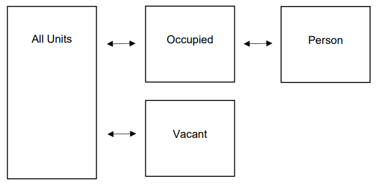

5 Querying NYC HVS Data
library(tidyverse)
library(srvyr)
library(DT)
#All HVS PUF Datasets
all23 <- readr::read_csv("https://www.nyc.gov/assets/hpd/data/allunits_puf_23.csv")
occ23 <- readr::read_csv("https://www.nyc.gov/assets/hpd/data/occupied_puf_23.csv")
vac23 <- readr::read_csv("https://www.nyc.gov/assets/hpd/data/vacant_puf_23.csv")
per23 <- readr::read_csv("https://www.nyc.gov/assets/hpd/data/person_puf_23.csv")The NYC Housing and Vacancy Survey (HVS) is a comprehensive housing survey conducted approximately every three years by the U.S. Census Bureau on behalf of the NYC Department of Housing Preservation and Development (HPD). Established in 1965, the HVS was created in response to the City’s Rent Stabilization Law, which requires periodic measurement of the citywide rental vacancy rate to determine whether a housing emergency exists. Beyond its legal function, the survey serves as the city’s primary source of detailed data on housing conditions, affordability, and demographics. It collects information on occupancy status, rent, utilities, income, building age, and physical quality, among many other variables. The HVS provides a unique longitudinal record of New York’s housing stock and is considered one of the most detailed local housing datasets in the United States.
In the wake of Donald Trump’s election and subsequent efforts to restrict access to federal data, the administration removed or suppressed numerous websites and datasets from agencies such as the Census Bureau. In response, responsibility for hosting and maintaining public access shifted into the hands of NYC’s HPD, ensuring continued public access and stewardship of this vital housing data tool. As such, all information about the survey, as well as the survey data itself, is located here: https://www.nyc.gov/site/hpd/about/research.page
There are four public use files that provide microdata to work with:

The CONTROL variable joins all of the tables together, with every housing unit in the All Units dataset being in either Occupied Units or Vacant Units, and every person living in an Occupied Unit showing up as their own row in the Persons dataset (i.e., many-to-one match). Projects should start by identifying the universe of interest (all, occupied, or vacant units) and then left join to that dataset (using CONTROL as the key) to pull in variables from other datasets.
5.1 Survey Design
Unlike the American Community Survey (ACS), which provides thousands of pre-calculated indicators in ready-made tables and crosstabs, the HVS is released primarily as raw microdata. Each record represents an individual housing unit or person, requiring users to construct their own measures and apply statistical weights to produce representative estimates. Working with the HVS therefore involves a more hands-on analytical process: users must merge datasets, define variables, and apply survey design adjustments using software capable of complex survey processing, such as R’s srvyr package. This structure makes the HVS both more flexible and more demanding, allowing researchers to generate customized analyses while maintaining methodological rigor.
The optimal workflow is (1) decide on a universe of housing units, (2) pull together needed variables from the different files, and (3) convert the dataframe to a replicate-weighted survey design object (using pre-set arguments outlined in the HVS documentation):
occ23 %>%
dplyr::left_join(
all23 %>%
dplyr::select(CONTROL, CSR),
by = "CONTROL") %>%
srvyr::as_survey_rep(
weights = FW,
repweights = num_range("FW", 1:80),
type = "other",
combined_weights = TRUE,
scale = 4/80,
rscales = 1,
mse = TRUE
)## Call: Called via srvyr
## with 80 replicates and MSE variances.
## Sampling variables:
## - repweights: `FW1 + FW2 + FW3 + FW4 + FW5 + FW6 + FW7 + FW8 + FW9 + FW10 + FW11 + FW12 + FW13 + FW14 + FW15 + FW16 +
## FW17 + FW18 + FW19 + FW20 + FW21 + FW22 + FW23 + FW24 + FW25 + FW26 + FW27 + FW28 + FW29 + FW30 + FW31 + FW32 +
## FW33 + FW34 + FW35 + FW36 + FW37 + FW38 + FW39 + FW40 + FW41 + FW42 + FW43 + FW44 + FW45 + FW46 + FW47 + FW48 +
## FW49 + FW50 + FW51 + FW52 + FW53 + FW54 + FW55 + FW56 + FW57 + FW58 + FW59 + FW60 + FW61 + FW62 + FW63 + FW64 +
## FW65 + FW66 + FW67 + FW68 + FW69 + FW70 + FW71 + FW72 + FW73 + FW74 + FW75 + FW76 + FW77 + FW78 + FW79 + FW80`
## - weights: FW
## Data variables:
## - CONTROL (dbl), TENURE (dbl), HHSIZE (dbl), HH62PLUS (dbl), HHUNDER18 (dbl), HHUNDER6 (dbl), HHFIRSTMOVEIN (dbl),
## HHDEAR (dbl), HHDEYE (dbl), HHDREM (dbl), HHDPHY (dbl), HHDDRS (dbl), HHDOUT (dbl), HHDONEPLUS (dbl), MOD_HAVE
## (dbl), MOD_NEED (dbl), UNIT_RATING (dbl), EXTERM_FREQ (dbl), NOHEAT (dbl), NOHEAT_NUM (dbl), FIX_311 (dbl),
## NOHOTWATER (dbl), ADDHEAT (dbl), LEAKS (dbl), MOLD (dbl), MUSTY (dbl), ELEVATOR_BROK (dbl), ELEVATOR_ALLBROK (dbl),
## RODENTS_UNIT (dbl), RODENTS_BUILD (dbl), TOILET_BROK (dbl), ROACHES_NUM (dbl), WALLHOLES (dbl), FLOORHOLES (dbl),
## PEELPAINT (dbl), PEELPAINT_LARGE (dbl), HPROBCOUNT (dbl), ACUNIT (dbl), AC_OFF (dbl), TEMP_HOT (dbl), ANIMS (dbl),
## SERVICEANIMAL (dbl), PETTYPE_DOG (dbl), PETTYPE_CAT (dbl), PETTYPE_OTHER (dbl), PA_FOOD (dbl), PA_CASH (dbl),
## PA_OTHER (dbl), PA_ANY (dbl), FOODINSECURE (dbl), UTIL_ELECTRIC (dbl), UTIL_GAS (dbl), UTIL_HEAT (dbl), UTIL_WATER
## (dbl), UTIL_INCLUDED (dbl), UTIL_NONE (dbl), UTILCOSTS_SUMMER (dbl), UTILCOSTS_WINTER (dbl), UTILCOSTS_HEAT (dbl),
## UTILCOSTS_WATER (dbl), MUTIL (dbl), INTERUPT_UTIL (dbl), INTERUPT_PHONE (dbl), INTERUPT_CELL (dbl), INTERUPT_NONE
## (dbl), HHINC_REC1 (dbl), HUDILFY22 (dbl), HUDILFY23 (dbl), HHPOVERTY (dbl), LEASENOW (dbl), LEASEEVER (dbl),
## LEASE_LENGTH (dbl), LEASE_START (dbl), RENTASSIST (dbl), RENTASSIST_VOUCHER (dbl), RENTOUTSIDE (dbl), RENTFEES
## (dbl), RENTFEES_AMOUNT (dbl), RENT_AMOUNT (dbl), GRENT (dbl), RENTPAID (dbl), RENTPAID_AMOUNT (dbl), MISSRENT
## (dbl), MISSRENT_NUM (dbl), STILL_OWE (dbl), ALTRENT_CREDIT (dbl), ALTRENT_SAVINGS (dbl), ALTRENT_LOAN (dbl),
## ALTRENT_ASSET (dbl), ALTRENT_OTHER (dbl), ALTRENT_ONEPLUS (dbl), RENTCREDIT_PAIDOFF (dbl), RENTBURDEN_CAT (dbl),
## INHERIT (dbl), OWNEROUT (dbl), FIRSTTIMEOWNER (dbl), RECENT_DOWNPAY (dbl), HELPDOWNPAY_PROG (dbl), HELPDOWNPAY_GIFT
## (dbl), HELPDOWNPAY_NONE (dbl), HDEBT_FIRSTMORT (dbl), HDEBT_ADDL (dbl), HDEBT_NONE (dbl), INT_FIRSTMORT (dbl),
## MFIRSTMORT (dbl), MOWNERCOST (dbl), HINSURE_AMT (dbl), HFLOODINSURE (dbl), HFLOODINSURE_AMT (dbl), HOFINSURE_AMT
## (dbl), LATEMORTGAGE (dbl), HHMORTDEDUCT (dbl), TOTAL_FIRSTMORT (dbl), ASSESSMENT (dbl), ASSESSMENT_AMT (dbl),
## CROWD_BDRM (dbl), CROWD_RM (dbl), HHCOVIDDIAG (dbl), NABE_MOVED (dbl), NABENOW_RATE (dbl), NABETHEN_RATE (dbl),
## SAFETY_RATE (dbl), HHLANG_EN (dbl), HHLANG_SP (dbl), HHLANG_HC (dbl), HHLANG_RU (dbl), HHLANG_BN (dbl), HHLANG_CH
## (dbl), HHLANG_NONENG (dbl), I_NOHEAT (dbl), I_NOHEAT_NUM (dbl), I_ADDHEAT (dbl), I_LEAKS (dbl), I_RODENTS_UNIT
## (dbl), I_RODENTS_BUILD (dbl), I_TOILET_BROK (dbl), I_WALLHOLES (dbl), I_FLOORHOLES (dbl), I_PEELPAINT (dbl),
## I_PEELPAINT_LARGE (dbl), I_UTIL_ELECTRIC (dbl), I_UTIL_GAS (dbl), I_UTIL_HEAT (dbl), I_UTIL_WATER (dbl),
## I_UTIL_NONE (dbl), I_UTIL_INCLUDED (dbl), I_UTILCOSTS_HEAT (dbl), I_UTILCOSTS_WATER (dbl), I_UTILCOSTS_WINTER
## (dbl), I_UTILCOSTS_SUMMER (dbl), FLG_I_MUTIL (dbl), FLG_I_HHINC_REC1 (dbl), I_RENTOUTSIDE (dbl), I_RENT_AMOUNT
## (dbl), I_RENTPAID (dbl), I_RENTPAID_AMOUNT (dbl), FLG_I_GRENT (dbl), I_HDEBT_FIRSTMORT (dbl), I_HDEBT_ADDL (dbl),
## I_HDEBT_NONE (dbl), FLG_I_MFIRSTMORT (dbl), FLG_INT_FIRSTMORT (dbl), FLG_I_MOWNERCOST (dbl), FLG_TC_MUTIL (dbl),
## FLG_TC_PA_INC (dbl), FLG_TC_HHINC_REC1 (dbl), FLG_TC_GRENT (dbl), I_TOTAL_FIRSTMORT (dbl), FLG_TC_MORTG (dbl), FW
## (dbl), FW1 (dbl), FW2 (dbl), FW3 (dbl), FW4 (dbl), FW5 (dbl), FW6 (dbl), FW7 (dbl), FW8 (dbl), FW9 (dbl), FW10
## (dbl), FW11 (dbl), FW12 (dbl), FW13 (dbl), FW14 (dbl), FW15 (dbl), FW16 (dbl), FW17 (dbl), FW18 (dbl), FW19 (dbl),
## FW20 (dbl), FW21 (dbl), FW22 (dbl), FW23 (dbl), FW24 (dbl), FW25 (dbl), FW26 (dbl), FW27 (dbl), FW28 (dbl), FW29
## (dbl), FW30 (dbl), FW31 (dbl), FW32 (dbl), FW33 (dbl), FW34 (dbl), FW35 (dbl), FW36 (dbl), FW37 (dbl), FW38 (dbl),
## FW39 (dbl), FW40 (dbl), FW41 (dbl), FW42 (dbl), FW43 (dbl), FW44 (dbl), FW45 (dbl), FW46 (dbl), FW47 (dbl), FW48
## (dbl), FW49 (dbl), FW50 (dbl), FW51 (dbl), FW52 (dbl), FW53 (dbl), FW54 (dbl), FW55 (dbl), FW56 (dbl), FW57 (dbl),
## FW58 (dbl), FW59 (dbl), FW60 (dbl), FW61 (dbl), FW62 (dbl), FW63 (dbl), FW64 (dbl), FW65 (dbl), FW66 (dbl), FW67
## (dbl), FW68 (dbl), FW69 (dbl), FW70 (dbl), FW71 (dbl), FW72 (dbl), FW73 (dbl), FW74 (dbl), FW75 (dbl), FW76 (dbl),
## FW77 (dbl), FW78 (dbl), FW79 (dbl), FW80 (dbl), CSR (chr)Once the dataset is converted into a replicate-weighted survey design object, R recognizes each observation as part of a complex survey sample rather than as an independent data point. This structure enables design-based analysis, allowing estimates, variances, and confidence intervals to reflect the HVS’s sampling methodology. With this object in place, researchers can use tidyverse-style verbs such as summarize() with functions from srvyr like:
survey_total()for countssurvey_total(col)for sumssurvey_mean(col)for meanssurvey_median(col)for medianssurvey_quantile(col, quantiles = x)for other quantiles- Etc.
occ23 %>%
srvyr::as_survey_rep(
weights = FW,
repweights = num_range("FW", 1:80),
type = "other",
combined_weights = TRUE,
scale = 4/80,
rscales = 1,
mse = TRUE
) %>%
dplyr::summarize(
.by = TENURE,
count = srvyr::survey_total(),
median_hhsize = srvyr::survey_median(HHSIZE)
) %>%
DT::datatable() %>%
DT::formatRound(c("count", "median_hhsize"), digits = 0) %>%
DT::formatRound(c("count_se", "median_hhsize_se"), digits = 1)5.2 Variables
The HVS Codebook is the central reference for identifying, locating, and interpreting variables in the survey. It lists every variable and indicates which of the four datasets it is stored in, making it the first place to look when selecting variables or joining data across files. Because all responses are stored as numeric codes rather than text, the Codebook is also necessary for translating these values into their intended meanings and for avoiding common misreadings that can distort results.

Commonly used variables include the following:
5.2.2 Regulatory Status (All Units)
all23 %>%
dplyr::mutate(
bldg_type = dplyr::case_when(
#Renters
CSR == "05" ~ "NYCHA",
CSR == "32" ~ "Rent Stabilized",
CSR == "90" ~ "Rent Controlled",
CSR == "97" ~ "Other Subsidized/Regulated Rental",
CSR == "80" ~ "Private/Unregulated Rental",
#Owners
CSR == "02" ~ "Coop",
CSR == "12" ~ "Condo",
CSR == "96" ~ "Subsidized/Regulated Owner-Occupied",
CSR == "06" ~ "Other Owner-Occupied",
#Vacant
CSR == "03" ~ "Vacant, for Sale",
CSR == "04" ~ "Vacant, not for Sale"
)
)5.2.3 Year Built (All Units)
all23 %>%
dplyr::mutate(
year_built = dplyr::case_when(
YEARBUILT == 1 ~ "1900 or earlier",
YEARBUILT == 2 ~ "1901 to 1919",
YEARBUILT == 3 ~ "1920 to 1929",
YEARBUILT == 4 ~ "1930 to 1946",
YEARBUILT == 5 ~ "1947 to 1959",
YEARBUILT == 6 ~ "1960 to 1973",
YEARBUILT == 7 ~ "1974 to 1979",
YEARBUILT == 8 ~ "1980 to 1989",
YEARBUILT == 9 ~ "1990 to 1999",
YEARBUILT == 10 ~ "2000 to 2009",
YEARBUILT == 11 ~ "2010 or later"
)
)5.2.4 Units in Building (All Units)
all23 %>%
dplyr::mutate(
units = dplyr::case_when(
UNITS == 1 ~ "1 unit",
UNITS == 2 ~ "2 units",
UNITS == 3 ~ "3 units",
UNITS == 4 ~ "4-5 units",
UNITS == 5 ~ "6-9 units",
UNITS == 6 ~ "10-12 units",
UNITS == 7 ~ "13-19 units",
UNITS == 8 ~ "20-49 units",
UNITS == 9 ~ "50-99 units",
UNITS == 10 ~ "100+ units"
)
)5.2.10 Voucher Use (Occupied)
occ23 %>%
dplyr::mutate(
voucher = dplyr::case_when(
RENTASSIST_VOUCHER == -2 ~ "Not applicable (owner)",
RENTASSIST_VOUCHER == -1 ~ "Not reported",
RENTASSIST_VOUCHER == 1 ~ "Has Section 8 / Housing Choice Voucher",
RENTASSIST_VOUCHER == 2 ~ "No Section 8 or Housing Choice Voucher"
)
)5.3 Examples
5.3.1 Count of Vacancy and Tenure
all23 %>%
dplyr::mutate(
occupancy = dplyr::case_when(
OCC == 1 ~ "Occupied",
OCC == 2 ~ "Vacant, available for rent",
OCC == 3 ~ "Vacant, not available for rent or sale"
)
) %>%
dplyr::left_join(
occ23 %>%
dplyr::transmute(
CONTROL,
tenure = dplyr::case_when(
TENURE == 1 ~ "Renter",
TENURE == 2 ~ "Owner"
)
),
by = "CONTROL"
) %>%
dplyr::mutate(
status = dplyr::case_when(
tenure == "Owner" ~ "Occupied, owner",
tenure == "Renter" ~ "Occupied, renter",
stringr::str_detect(occupancy, "^Vacant,") ~ occupancy
)
) %>%
srvyr::as_survey_rep(
weights = FW,
repweights = num_range("FW", 1:80),
type = "other",
combined_weights = TRUE,
scale = 4/80,
rscales = 1,
mse = TRUE
) %>%
dplyr::summarize(
.by = status,
n = srvyr::survey_total(vartype = "ci")
) %>%
DT::datatable() %>%
DT::formatRound(c("n", "n_low", "n_upp"), digits = 0)5.3.2 Median Rent by Regulation
occ23 %>%
dplyr::filter(
#Renters
TENURE == 1,
#Rent Reported
RENT_AMOUNT > 0
) %>%
dplyr::left_join(
all23 %>%
dplyr::transmute(
CONTROL,
bldg_type = dplyr::case_when(
#Renters
CSR == "05" ~ "NYCHA",
CSR == "32" ~ "Rent Stabilized",
CSR == "90" ~ "Rent Controlled",
CSR == "97" ~ "Other Subsidized/Regulated",
CSR == "80" ~ "Private/Unregulated",
#Owners
CSR == "02" ~ NA_character_,
CSR == "12" ~ NA_character_,
CSR == "96" ~ NA_character_,
CSR == "06" ~ NA_character_,
#Vacant
CSR == "03" ~ NA_character_,
CSR == "04" ~ NA_character_
)
),
by = "CONTROL"
) %>%
srvyr::as_survey_rep(
weights = FW,
repweights = num_range("FW", 1:80),
type = "other",
combined_weights = TRUE,
scale = 4/80,
rscales = 1,
mse = TRUE
) %>%
dplyr::summarize(
.by = bldg_type,
median_rent = srvyr::survey_median(RENT_AMOUNT)
) %>%
ggplot(
aes(
x = reorder(bldg_type, median_rent),
y = median_rent,
ymin = median_rent - median_rent_se,
ymax = median_rent + median_rent_se
)
) +
geom_col(fill = "dodgerblue3") +
geom_errorbar(width = 0.2) +
scale_y_continuous(
expand = c(0, 0),
limits = c(0, 2500),
breaks = seq(0, 2500, 250),
labels = scales::dollar_format(accuracy = 1)
) +
labs(
title = "Median Rent by Rental Type",
x = "Type of Rental Unit",
y = "Median Rent (2023$)",
caption = "NYC Housing Vacancy Survey, 2023."
) +
theme_minimal()